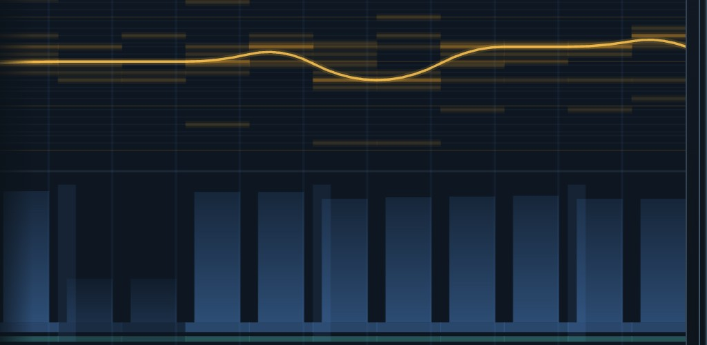

Marcus Anderson
Research notes, papers, software, and archived music work.
Research
-
Musical Repetition as Vocal Self-Simulation
A mechanistic theory arguing that precise repetition of affective vocalisation is the core process that turns sound into musical experience. -
Inverse-Square Distance Priors Improve Network Pruning at Extreme Sparsity
Tests a biologically inspired 1/d^2 wiring prior for sparse neural networks, showing improved ResNet-18 performance at 98-99% sparsity. -
Bandwidth and Capacity Systematically Shape the Topology of Inverse-Square Distance Pruning
Characterizes how inverse-square pruning changes network topology across input resolution and model size, highlighting bandwidth-dependent clustering and stronger 2D embeddings.
Software
A probabilistic, physically-modelled music studio — a browser instrument that generates music from weighted probability distributions across several musical timescales (melody, rhythm, surprise, timbre), plays it through a physical-modelling synthesis engine with a per-layer effects rack and binaural spatialisation, and arranges it on a full multitrack producer timeline.
It doubles as a research instrument: every sound is reproducible from a seed, and — only after a plain-language opt-in — what listeners explore and how they rate it can be logged, so musical appeal can be modelled directly against the mechanisms that generated the sound. Built to study the aesthetics and mechanistic origins of music.



Archive
-
Music Composition, 2018-2022
Archived composition, scores, recordings, and selected credits.